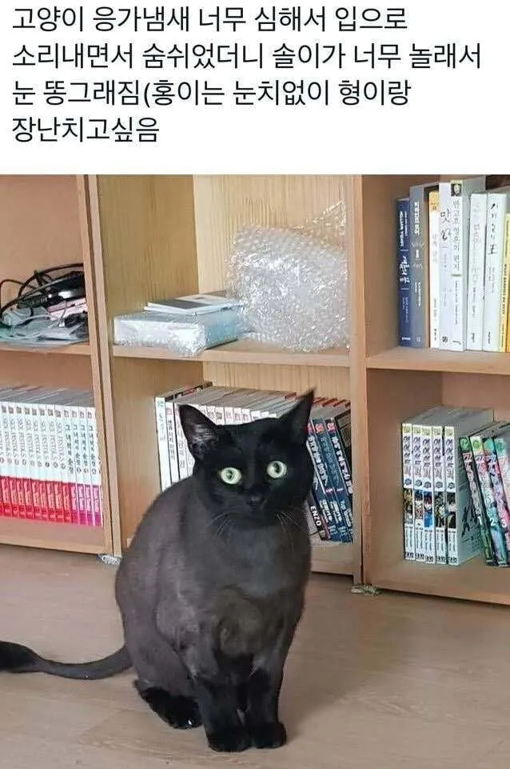
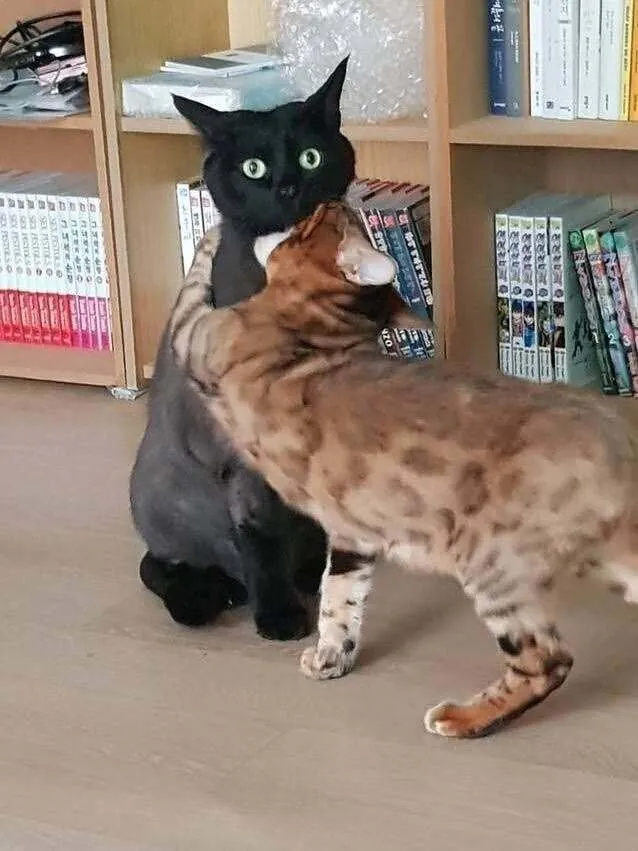
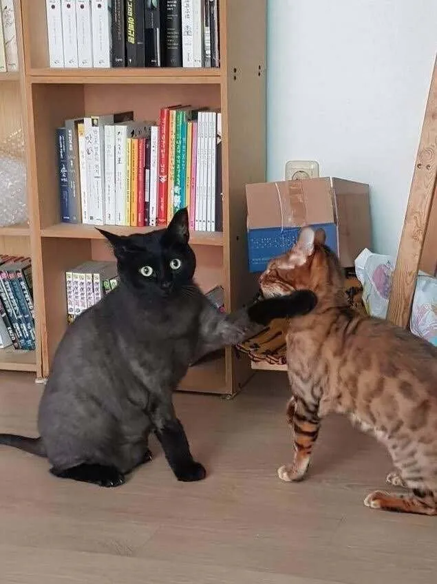
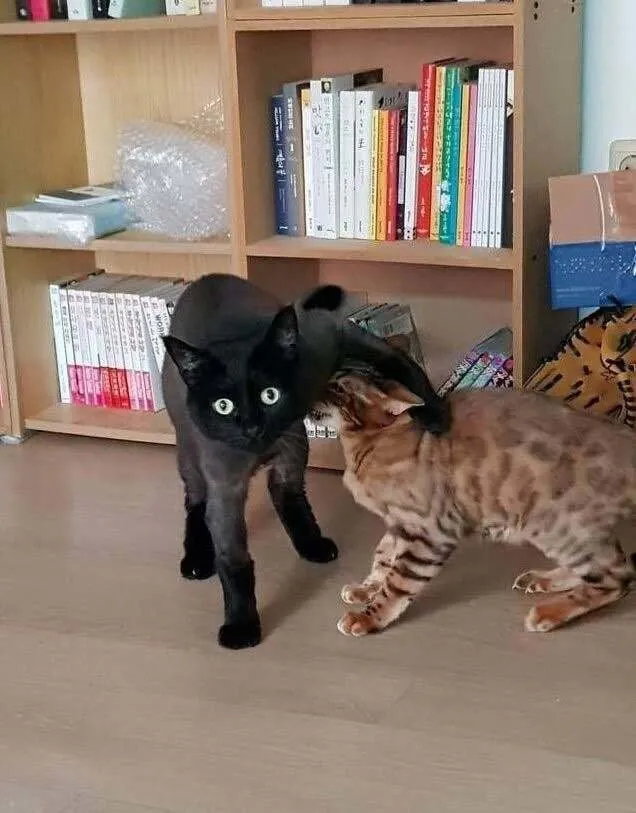

47 · 11 · 4 시간 전 · 원문




수집 당시 댓글 11개
뀰단 · 6 시간 전
잠깐 시발 뭐라고했냐??
끼끼팔팔 · 6 시간 전
야 놔봐 저새끼 우리말 했다니까
섹스가뭔데시발 · 6 시간 전
"다시 말해봐"
걸로간다 · 4 시간 전
아 형 참아요!!
관통소녀단 · 4 시간 전
내 똥먹었냥?
노들나루 · 4 시간 전
www.dogdrip.net · 4 시간 전
막짤 살 잡힌게 ㅈㄴ 웃김
퍼리애호가 · 4 시간 전
고양이 하악질이 널 죽여버리겠다 라면서
왜용 · 4 시간 전
ㅋㅋㅋㅋㅋㅋㅋ
명동발만두 · 4 시간 전
아이고.. 자기털도 잘라놓은거 참았는데....거 냄새 좀 난다고.ㅋㅋㅋ
야환자단어빼 · 3 시간 전
사진구도 개폭력적 ㅋㅋ
잠깐 시발 뭐라고했냐??